第34天：生成目标文件(上)
第34天：生成目标文件（上）
既然要生成目标文件，那就要明确我们生成的目标文件长什么样子。
上节课的目标文件结构示意图已经给出了方向。不过有些细节，还需要确认一下。
命令是：nasm -f elf32 test.asm -o test_nasm.oreadelf -a test_nasm.o
test_nasm.o 的总大小是 42864 字节,十六进制是 0xA770;
readelf 命令，正如它的名字一样，是展示 elf 文件信息的;
-a 就是 —all，表示打印所有的信息;
首先，会输出文件头
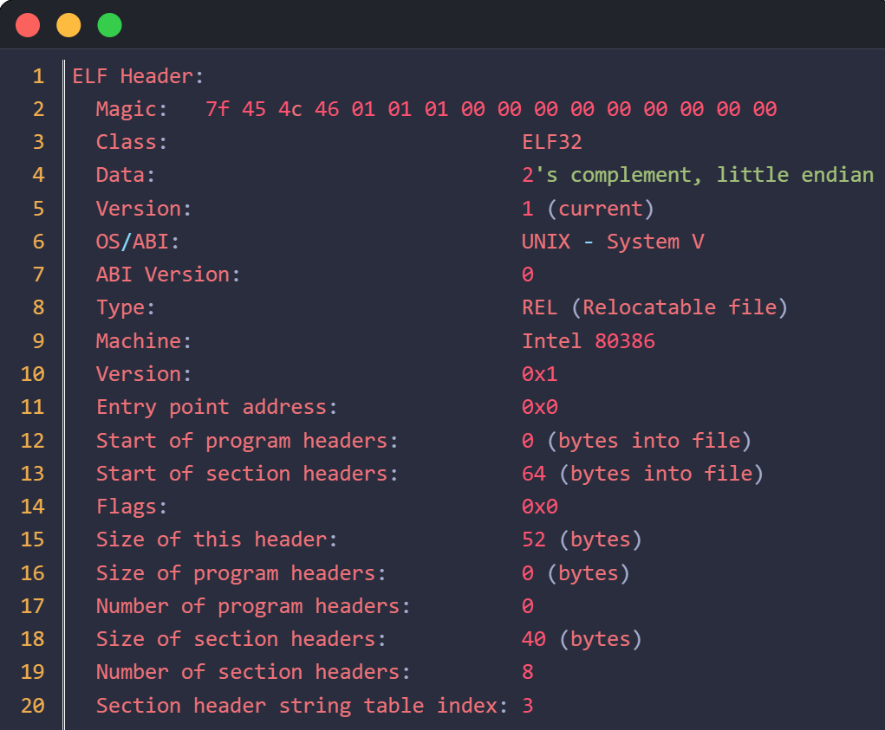
然后，输出段表
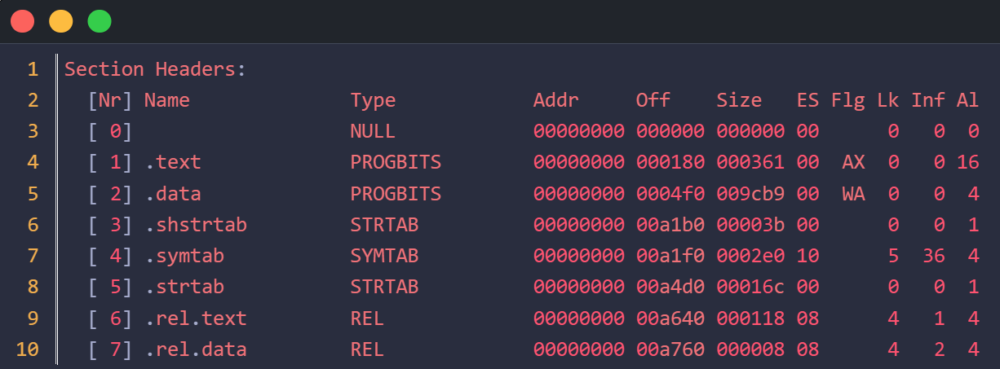
这里有 8 个段表项。
再然后，输出了重定位表
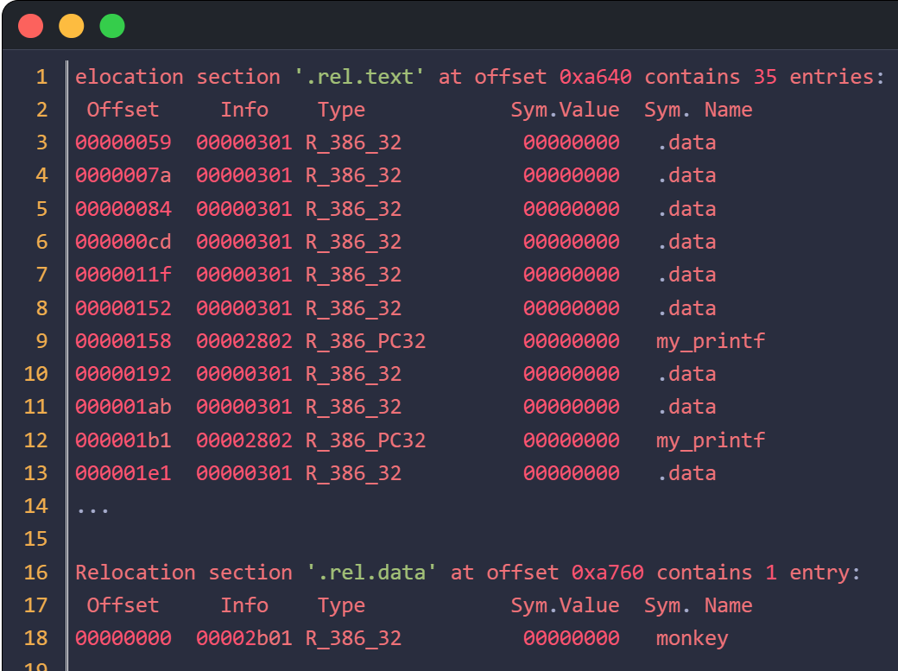
最后是符号表
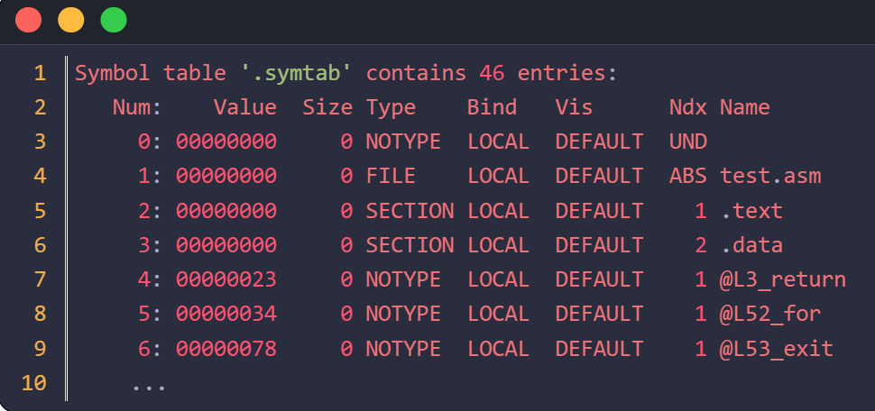
我们先看段表，也叫节头表。
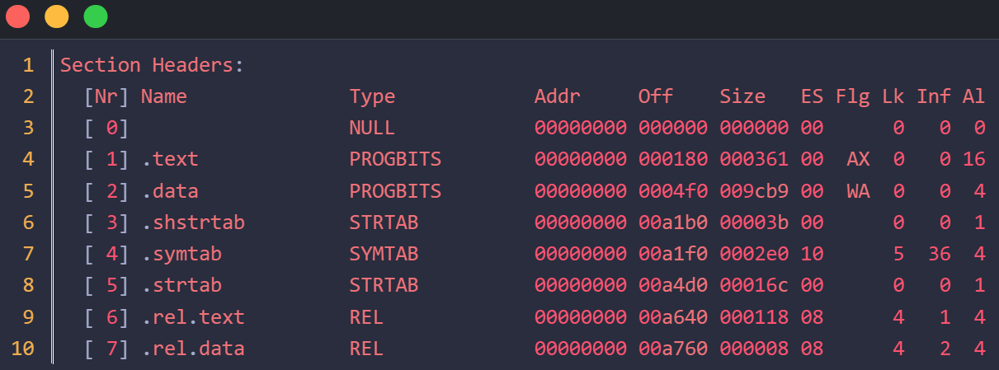
⬆段表举例图
之前讲过 elf 文件的格式，这里不再赘述。我们要讨论的是 .o 都由哪些部分组成，以及排列顺序是什么？
虽然 elf 格式并没有规定节头表中每个表项的 off 字段要依次递增，但是 nasm 很讲究，观察 off 这一列，发现是递增的。
还有一个问题，索引 [1] 是代码段(.text)，从偏移 0x180 开始，那么 0x180 之前是什么？
根据文件头，Start of section headers: 64 (bytes into file)
可以知道偏移 64 字节开始就是段表了。
再根据 Size of section headers: 40 (bytes)
Number of section headers: 8
可以知道段表占了 320 字节。
64 + 320 = 384 = 0x180；
所以，我们确定 0x180 之前是段表。
根据段表最后一个条目，也就是 .rel.data 段，偏移是 0xa760, 大小是 8，所以结尾就是 0xa768，再填充 8 个字节的零，刚好是 0xa780；
我是怎么知道填充了 8 个字节的零？hexdump -C -s 0xa768 test_nasm.o
-C 意思是 “规范的十六进制 + ASCII 字符同步显示”;
-s 0xa768 表示跳过前面 0xa768 个字节;
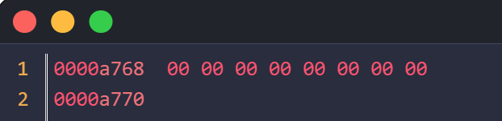
你瞧，确实是 8 字节的 0;
所以，整个 .o 的内容排列如下图（就是上节课的“目标文件结构示意图”）

需要说明的是：段表不一定要紧跟着文件头，也可以放在 .o 的最后，如果你愿意，甚至可以把段表塞在某两个段之间。
为了方便验证（拿我们生成的 .o 和 nasm 生成的 .o 比较），我们模仿 nasm 的布局。
有读者说，那我们是不是先输出一个文件头，然后需要什么内容就用 fwrite 函数往文件里写。
道理没有错，不过调用 fwrite 是最后的步骤。我们可以先构造出图中每个模块，例如有几个段表项，每个段表项的字段填什么值，代码段的内容是什么，待所有字段和内容敲定后，再往文件里面写。
my_elf_t
为了描述整个 .o 的组成，我设计了结构体 my_elf_t
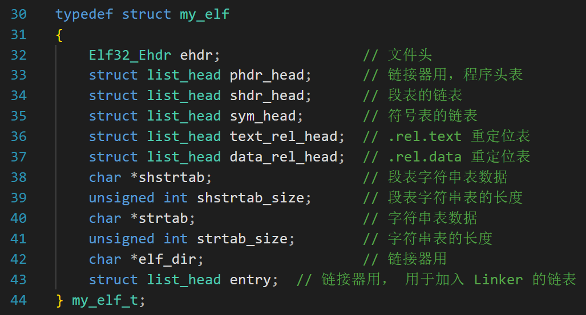
因为这个结构体不是官方定义的，是我设计的，所以我用 “my” 开头，防止混淆。
第 32 行的 Elf32_Ehdr 是官方定义的，去哪里找呢？把 Linux 系统的 /usr/include/elf.h 文件拷贝一份，放到我们的项目里，再 include 进来就可以了。
第 32 行是文件头，我们最后填充它。
第 33~37 是 5 个链表的头节点。
第 33 行，程序头表的链表，暂时用不上。
第 34 行，段表项的链表，所有段表的条目都挂在上面。
第 35 行，符号表项的链表，所有符号表项都挂在上面。
36~37，重定位表的链表。
第 38 行，这个指针指向段表字符串的内容。
第 39 行，表示段表字符串的长度。
40~41，描述字符串表。
因为这个结构和后面要学习的链接器是共用的，所以会有一些链接器才用到的字段，这节课不用关注。
我们定义一个 my_elf_t 类型的全局变量。
初始化代码如下：
1 | |
第 1 行的 static 表示把变量 my_elf_g 的作用域被限制在当前源文件内。
我们先构造哪个模块呢？
有读者说是文件头，也不能算错，但是文件头中某些字段要根据段表的结构确定，例如 “Section header string table index”（节头字符串表的索引）。所以不着急构造文件头。
仔细想想，应该先构造段表。因为每个 section 的偏移、大小、属性等都是按照对应的段表项来的，段表项确定了，整个 .o 的轮廓就出来了。
如果把 .o 比作一本书，那么文件头就是书的封面，段表就是书的目录，每个段就是书的每一章内容。一本书的框架如何确定，当然是看目录了。
段表
1 | |
上节课介绍了 Elf32_Shdr 这个结构体，它描述了段表项的每个字段。
不过我们要对它封装一下，一是增加 struct list_head entry，为了加入链表；二是增加 name、sh_idx 等字段，为了编程方便。
第 4 行是段的名字，name 指向某个字符串。
第 5 行也是名字，不过是枚举类型，因为有时候用枚举比字符串方便很多。
1 | |
以上是 shdr_name_e 的定义；例如某个段表项的 name 是“.text”,那么 e_name 就是 SECTION_TEXT根据前文段表举例图中的段表项的顺序，我定义了一个数组，元素是枚举类型。
1 | |
我们的节头表，就按照这个顺序从 0 开始排列表项。
有几点要说明：
- shdr_order[] 表示节头表里面表项的顺序，不是段的排列顺序；段的物理排列顺序不一定和节头表里面表项的顺序一致。只是 nasm 比较讲究，让段表中每个表项的 off 字段依次递增，这导致的结果就是段的物理分布和节头表表项的顺序一致。
- 第一个必须是空表项，空表项的 size 是 0，所以在文件中不占用物理空间。也就是说目录上有，但是没有对应的内容。
- 也不是每个文件都拥有这些段。例如有的文件没有代码，只有全局变量，那就没有 .text；还有的文件没有 .rel.data；
- 如果某个段不存在怎么处理？我们的处理方法是段表中依然有对应的表项，但是 size 字段是 0；
例如下面的汇编代码
1 | |
编译后生成的段表是
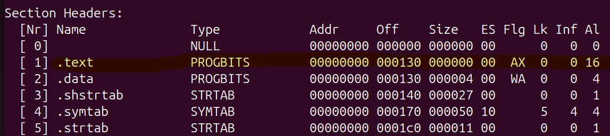
条目1 就是 .text 段，但是 size 是 0；
.data 的 off 和 .text 一样，都是 0x130,说明 .text 段不占物理空间。
add_shdr
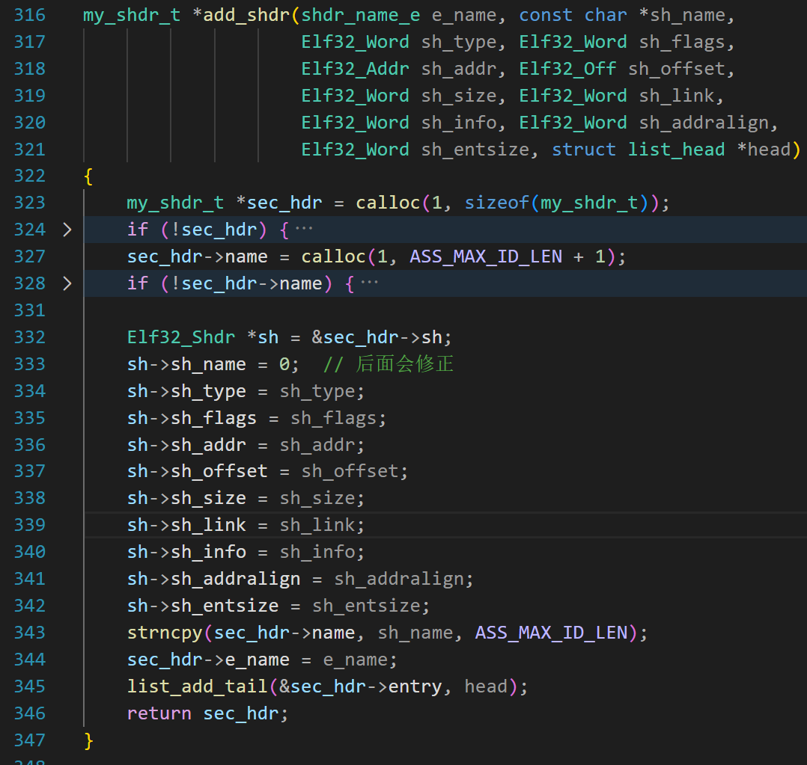
此函数用来构造段表项，并且把构造好的段表项加入到 my_elf_g.shdr_head 的链表。
参数有点多，不过还好，调用这个函数的地方不到 10 个，而且代码写好后，一般不用修改。
第 327，是给 name 分配内存，因为我们采用的都是标准段名，字符串长度不会超过 ASS_MAX_ID_LEN（= 20） 个字节，所以这里固定分配 21 个。
第 333 行，sh_name 先填写 0，后面会修改为正确的值。
第 334~342，填写其他 9 个字段。
第 345，加入链表。
我们复习一下段表项的字段：
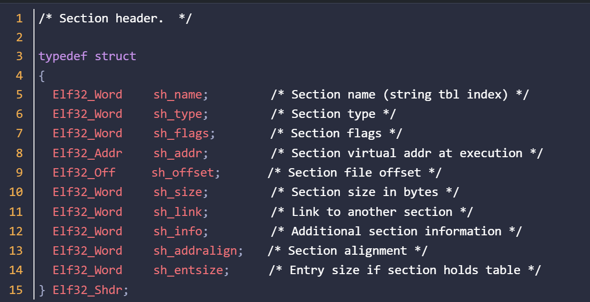
下面看看 add_shdr 这个函数怎么用
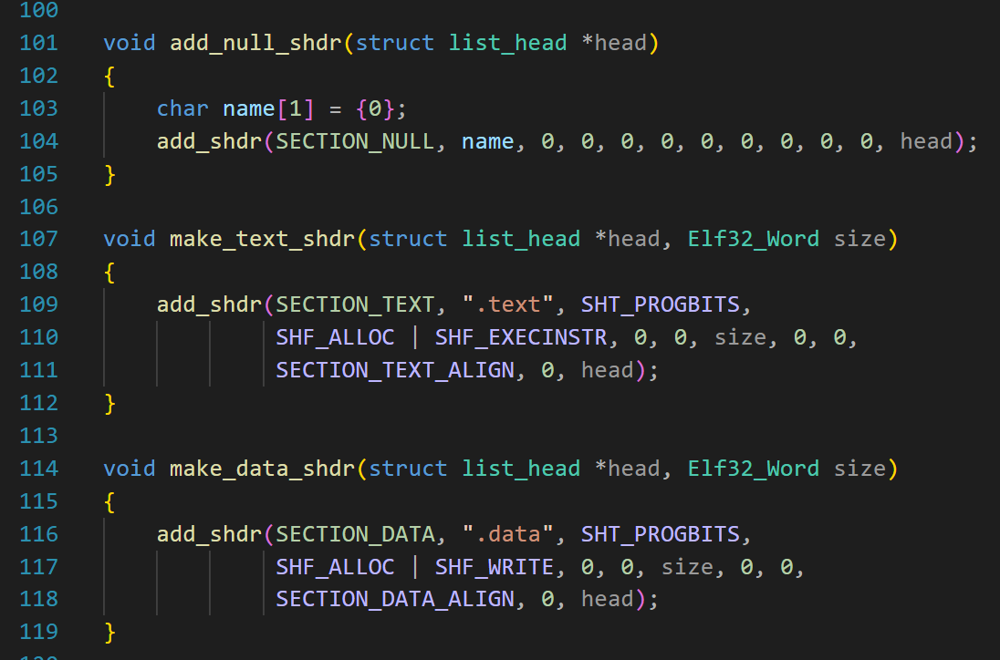
第 101 行，往链表里面添加一个空的表项。
第 107 行，添加代码段的段表项，第二个参数是代码段的大小。
第 109 行，第 3 个参数，SHT_PROGBITS 对应 sh_type，全称为 “Program Bits”。它表示该节包含的是程序定义的、由程序员或编译器提供的实际数据或代码，而不是 ELF 格式本身用于管理的元数据。
第 4 个参数，SHF_ALLOC | SHF_EXECINSTR 对应 sh_flags;
SHF_ALLOC 表示该节需要在运行时分配内存（即加载到内存）;
SHF_EXECINSTR 表示该节包含可执行的机器指令;
第 5 个参数，sh_addr 字段是 0，对于 .o ，不牵扯虚拟地址。
第 6 个参数，sh_offset，这个字段现在写 0，后面会填上合适的值;
第 7 个参数，sh_size，来自参数 size;
第 8、9 个参数，sh_link 和 sh_info 对于代码段，一般是 0;
第 10 个参数，sh_addralign , 取值 SECTION_TEXT_ALIGN（=16，模仿 nasm）;
第 11 个参数，sh_entsize,对于有表结构的段，表示表项的大小；对于不是表结构的段，取值 0；因为代码段没有表结构，所以是 0;
第 114 行，添加数据段的段表项，第二个参数是数据段的大小。
下面要解决的问题是如何获得代码段和数据段的大小。
在汇编器做语法分析的时候，我们设置了一个段计数器，每当遇到指令或者数据定义，这个计数器就会增加。
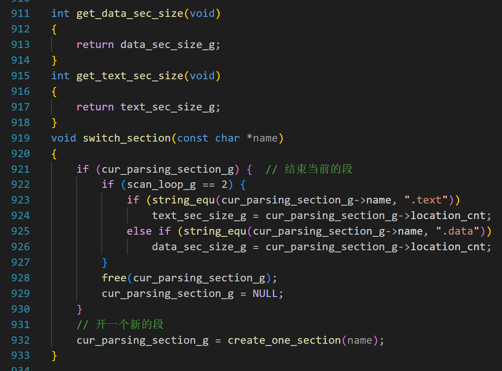
第 913 和第 917 行，text_sec_size_g、data_sec_size_g 都是全局变量，初始值为 0；
当遇到 section .xxx 的时候，就会调用第 919 行的函数，第 923~926，根据段的名字，把计数器的值赋给 text_sec_size_g 或者 data_sec_size_g；
语法分析结束后，代码段和数据段的大小就拿到了；
其他文件通过调用 get_text_sec_size() 和 get_data_sec_size() 获得这 2 个值。
make_elf
这个函数是最后调用的。不过为了让读者心中有数，我们可以看看它的代码。
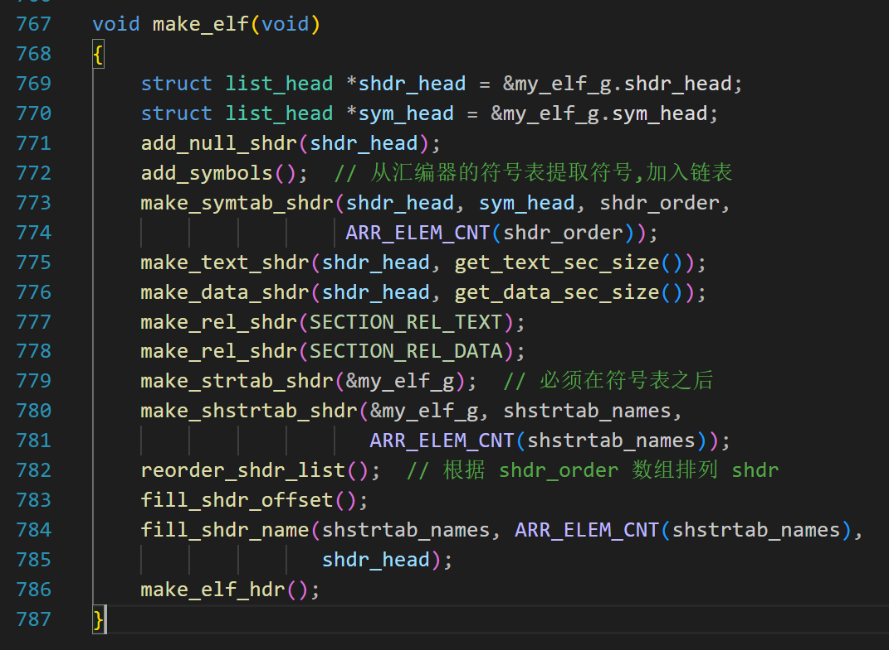
此函数用来组装 .o 文件；
第 771 行，添加空的段表项。
第 775 行，添加代码段的段表项。
第 776 行，添加数据段的段表项。
有读者问，不是说节头表的顺序是先空，然后是代码，再然后是数据段吗，第 773 行有个函数 make_symtab_shdr，为什么加入了符号表的段表项，和我们规定的顺序不一样啊。
观察得很仔细！
&my_elf_g.shdr_head 链表中的节点顺序，确实是空表项、符号表项、代码段表项,…
不过此时链表中的节点顺序并不是最终的顺序，第 782 行，我们会根据 shdr_order 数组，重新排列节点顺序。
reorder_shdr_list 函数代码如下：
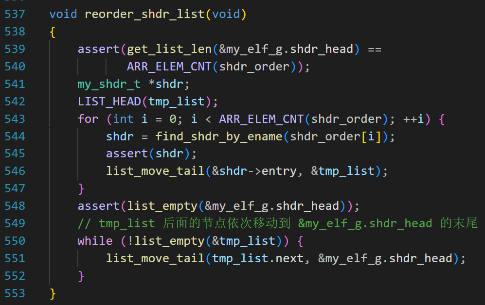
第 542 行，定义一个临时的链表。
第 543 行，根据 shdr_order 数组的元素顺序，在链表中查找对应的节点，找到后，第 546 行，把这个节点从原来的链表中拿下来，加入到临时链表的末尾。for 循环执行完毕后，临时链表的节点顺序和 shdr_order 数组是一致的。my_elf_g.shdr_head 链表就空了。
第 550 行，把临时链表上的节点再依次移动到 my_elf_g.shdr_head 上，这样，my_elf_g.shdr_head 上的节点顺序就是我们想要的。
符号表
和 my_shdr 类似，为了维护符号表，我设计了 my_sym
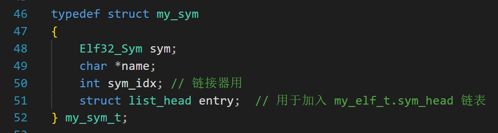
第 49 行，是符号的名字;
第 48 行的 Elf32_Sym 类型，也来自 /usr/include/elf.h
1 | |
Elf32_Sym 表示符号表中的一个条目；一共有 6 个字段;
每个字段的含义，上节课讲了。
为了添加符号，我设计了 __add_sym 这个函数。
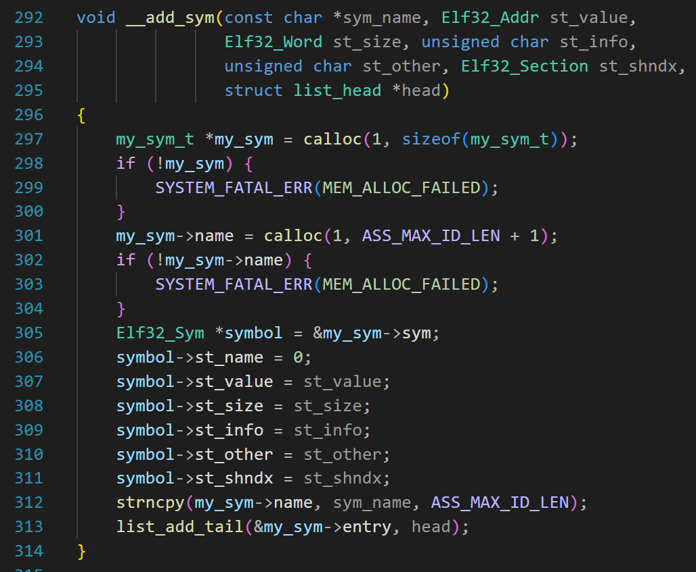
第 1 个参数是字符串，用于给 my_sym 的 name 字段赋值（第 312 行）；
第 2 到第 6 个参数，对应代码 307~311；
第 313 行，把 my_sym 加入链表；
代码中，有时候直接调用这个函数添加符号，有时候会调用 add_sym；
add_sym 是对 __add_sym 的封装。
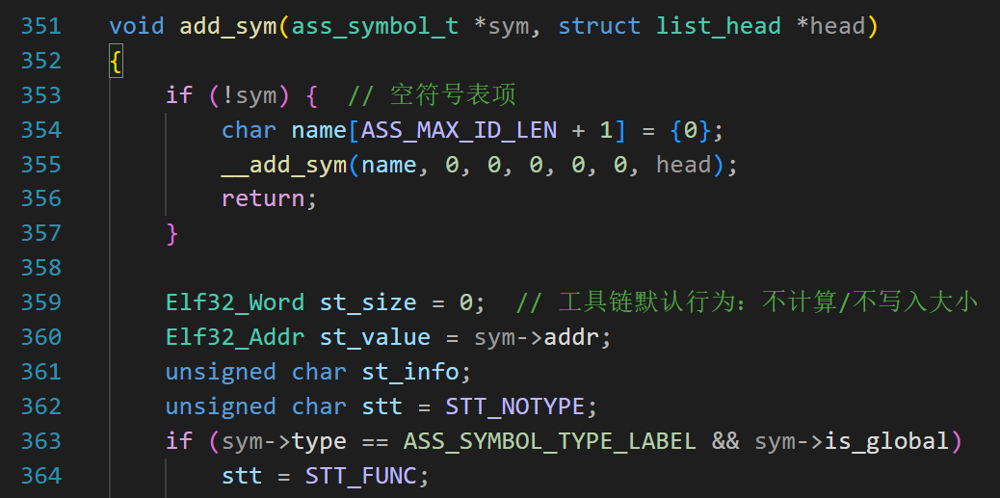
第一个参数是 ass_symbol_t 类型，这是汇编器做语法分析时用到的数据结构。
第二个是要加入的链表的头节点，应该传入 &my_elf_g.sym_head；
第 353 行，如果传入的 sym 是 NULL，则说明要添加空的符号表项，第 355，添加空的符号表项。
第 359 行，不管是 nasm 还是 gcc 编译出来的 .o, 符号表中的 st_size 都是 0，看来链接器不关心这个字段，我们也填写 0；
第 360 行，这个字段很重要，对于可重定位文件， st_value 表示 该符号在其所属节（section）内的偏移量（offset）（符号的段内偏移）；它不是最终的虚拟地址，而是一个“节内相对地址”。
在汇编器的语法分析阶段，我们把当前段计数器的值赋值给 sym->addr，这就是符号的段内偏移。
第 362 行，默认符号类型是 STT_NOTYPE，代表该符号的类型未指定（No Type）；
查看 Nasm 生成的 .o，对于函数和变量，Type 这列都是 STT_NOTYPE；
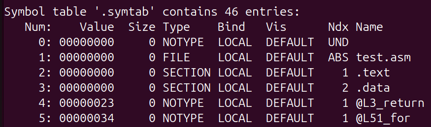
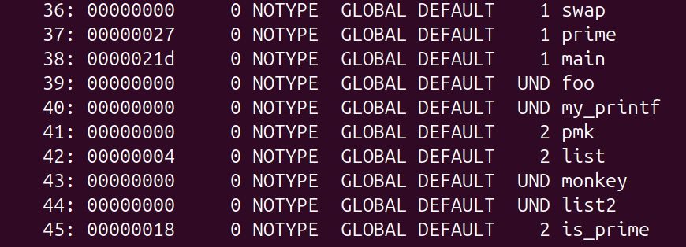
还有 3 个条目比较特别。
Num = 1 的条目，Type 是 FILE，Name 是文件名字。
Num = 2、3，Type 是 SECTION，Name 是 .text 和 .data；
其实符号表中可以没有以上符号。
但是第 3 个（.data）要有，因为重定位表可能会用。
我们继续看代码。
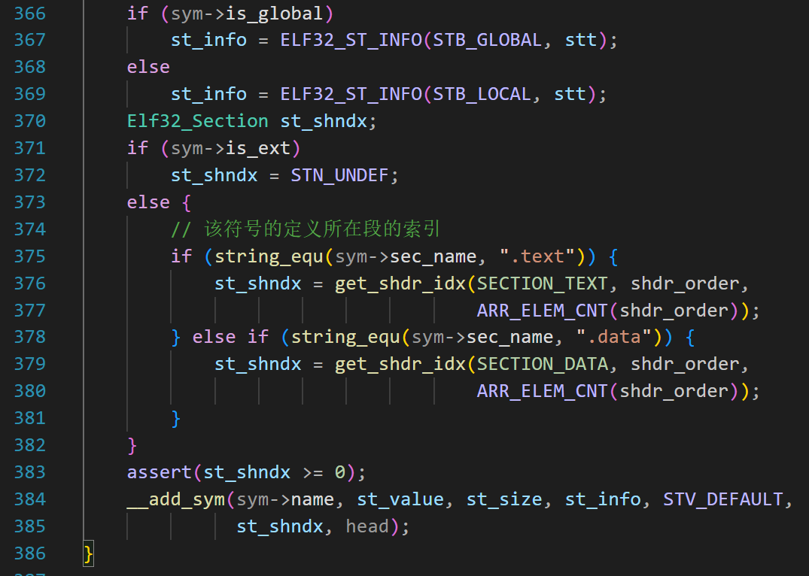
汇编代码中，如果一个符号声明为 global, 那么汇编器就会把该符号的 is_global 字段设置为 true;特别注意，对于外部的符号，也属于 global；相关的代码是：
1 | |
第 17 行，外部符号的 is_global 也是 true；
再回到刚才的代码，第 366~369，把 bind 字段和类型拼接起来。st_info,占1字节，低4位表示符号类型，高4位表示绑定信息；
st_shndx 是符号被定义的段的索引。
对于外部符号，这个索引是 0（STN_UNDEF），指向段表项的第 0 个条目，也就是空表项。此时空表项的作用就体现出来了，有点类似C语言中的 NULL；
因为我们只有２个段，对于内部符号，不是代码段就是数据段，但是需要拿到段的索引。
get_shdr_idx 是一个辅助函数，根据段的名字（枚举类型），从定义的 shdr_order 数组里面查段的索引，代码就不贴了。
第 384 行，调用我们之前写的 __add_sym 函数，把符号加入链表。
添加符号的顶层函数是 add_symbols；
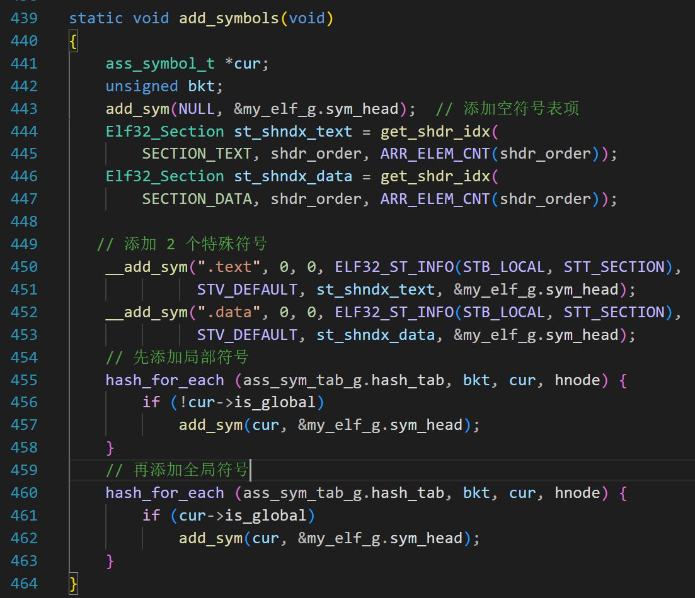
第 443 行，添加空的符号表项。
第 444~447，用 get_shdr_idx 函数获取代码段和数据段的段索引。
第 450~453，模仿 nasm 添加 2 个段符号（.text 和 .data）;
第 4 个参数是 STB_LOCAL 和 STT_SECTION 的组合。
第 2 和第 3 个参数都是 0，分别对应 st_value 和 st_size，因为 .text 和 .data这 2 个符号，代表 .text 和 .data 的开始位置，所以它的偏移量（st_value ）自然是 0；
st_size 填 0 就行，前文说过了。
第 455 行，遍历哈希表，添加局部符号;
第 460 行，遍历哈希表，添加全局符号;
可能读者会好奇，为什么要遍历两次，分开添加局部和全局符号？
因为在 ELF 规范中，符号表（Symbol Table）的排列顺序是有规定的，
根据 System V ABI 标准，符号表项必须遵循以下顺序：
所有具有 STB_LOCAL（局部）绑定属性的符号都必须排在所有具有 STB_GLOBAL（全局）或 STB_WEAK 属性的符号之前。
我们不考虑 STB_WEAK 属性的符号，所以只有局部和全局两种符号。
段表项里面有一个字段叫 sh_info，对于符号表，记录符号表内最后一个局部符号的索引+1；对于重定位表，指向被修补的节的索引；
链接器（Linker）在处理重定位或符号解析时，通常只关心全局符号，所以只需要查看符号表的段表项，取出 sh_info，从它开始就是全局符号的索引；
如果排列顺序是随意的，那么链接器必须遍历整个符号表并检查每一个符号的 st_info 属性，效率会大大降低。
符号表已经构造完成，下面可以构造和添加符号表的表项了。
注意，符号表和符号表表项是两回事。前者是所有符号构成的一张表，后者是段表里面的一个条目，这个条目记录了符号表的位置，大小等信息。
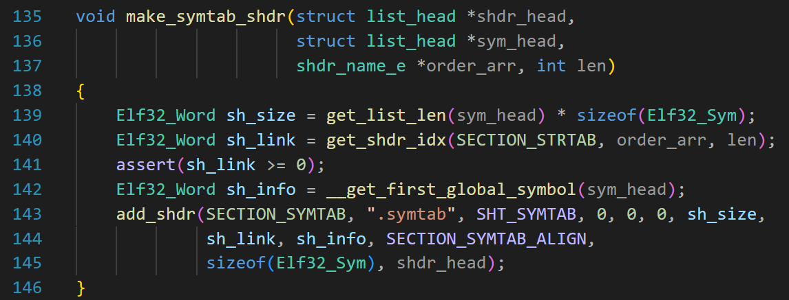
第 1 个参数应该传入 &my_elf_g.shdr_head，此链表用来管理已经构造好的段表项。
第 2 个参数应该传入 &my_elf_g.sym_head;
第 3 个参应该传入 shdr_order，此数组记录段表项的顺序；
第 4 个参数是 shdr_order 数组的元素个数；
第 139 行，求 sh_size， 等于符号的个数 * 每个符号条目的大小。
第 140 行，获得 .strtab 段的索引，赋值给 sh_link，这是因为对于符号表，sh_link 指向与之关联的字符串表 (.strtab) 的索引。因为符号表中每个符号的名字，要在字符串表中查询偏移。
第 142 行，利用 __get_first_global_symbol 函数遍历符号表，找到第一个全局符号的索引，赋值给 sh_info；
第 143，构造符号表对应的段表项，第 3 个参数是 SHT_SYMTAB，表示符号表。
至于参数中的三个 0，分别是 sh_flags(执行期间不需要分配内存，所以是 0)、sh_addr（对于 .o 都是 0）、sh_offset（现在写 0，后面会填上合适的值）。